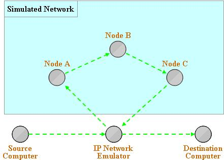
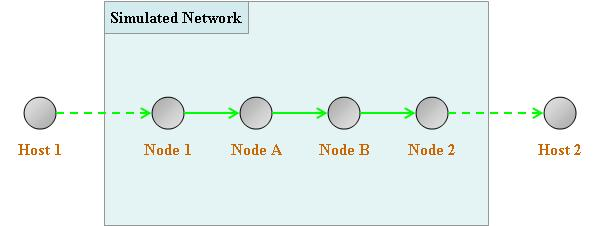

|
IPNE interface implements a
packet sniffer/injector in conjunction with the External Interface API. It
sniffs packets from the physical network, sends packets through the QualNet
simulation, and injects them back into the physical network. The applications
or protocols involved are mostly unaware that there is a virtual QualNet
network. IP
Network Emulator Overview
shows a brief diagram depicting its operationS

Figure. IP Network Emulator Overview
With IPNE capability, real-life packets can be injected into QualNet
scenario and delivered to the destination node.
For instance in Figure below, Host1 is the video streaming server and the
Host 2 is the client that receives the streaming packets and plays it. Host 1 transmits a packet to Host 2 without
knowing that there is QualNet scenario running in-between. IPNE captures a packet from Host 1 destined
to Host2 and delivers it to Node 1.
QualNet will deliver a packet to Node 2 using the protocols defined in
QualNet scenario. Once a packet arrives at
Node 2, IPNE injects it to real network so that Host 2 can receive it. Node 1 and 2 are called as Virtual nodes,
which are corresponding nodes of real nodes, Host 1 and 2. The real nodes are called as Operational
nodes. Nodes in QualNet scenario are
called Simulated nodes, which are Node A and B.

Figure. IPNE Terminology
|
|